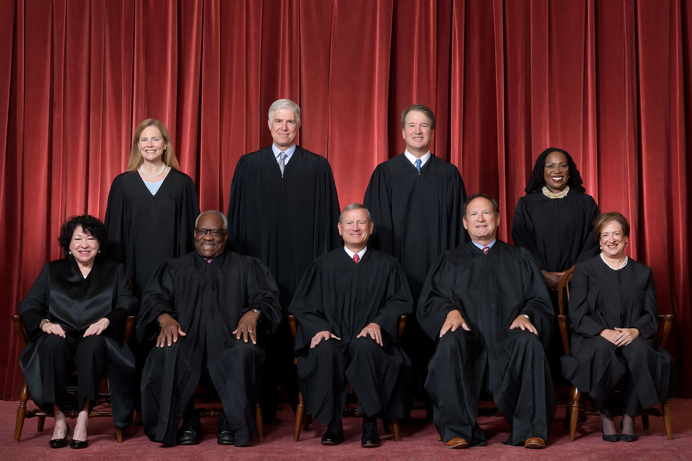
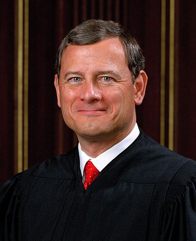
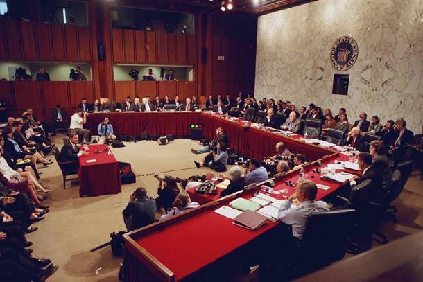

The Judicial Branch
Dr. Christopher N. Lawrence
Middle Georgia State University
POLS 1101: American Government
🔊 Disable Narration
The U.S. Legal System
Federal and most states' systems (except La.) based on common law tradition and use of precedent.
Criminal law: involves offenses against society; the state is a party.
Civil law: conflicts between individuals and corporations.
Exception to double jeopardy.
Types of Law
Federal courts regularly interpret four different forms of law.
Statutory law
Constitutional law
Administrative law
Executive orders
The Federal Judiciary
-
94 district courts – original jurisdiction in most cases.
-
13 Courts of Appeals
-
11 regional circuits (numbered)
-
DC Circuit
-
Federal Circuit
-
-
Supreme Court
-
Limited original jurisdiction
-
Discretionary docket for appeals
-
The Federal Court System
District and Circuit Courts
The Supreme Court

Supreme Court's Original Jurisdiction
Limited by Constitution to:
-
Cases involving ambassadors and “other public ministers and consuls” from other nations.
Certain cases in which states are a party (usually, controversies between two or more states).
Deciding to Decide
Appeals from state courts of last resort and lower federal courts made using writs of certiorari.
-
Rule of Four used to decide — more likely when…
Circuit split — lower courts disagree.
Solicitor general wants court to hear appeal.
If cert is not granted, the lower court's decision stands and no further appeal is possible.
Hearing the Appeal
-
The petitioner and respondent submit briefs discussing their arguments.
Briefs from amici curiae and solicitor general are also common.
-
Opposing sides usually get 30 minutes each to argue their case in oral argument.
Deciding the Case
After oral argument, each case is discussed in conference.
-
The majority opinion is assigned based on the preliminary vote…
By the chief justice: when the chief justice is in the majority.
Otherwise: by the most senior associate justice in the majority.
Other justices may write concurring or dissenting opinions.
The Final Verdict
The “final vote” is based on who signs each opinion.
-
A majority opinion must be signed by five justices:
Precedent is based on majority opinions.
Only the majority opinion is binding on lower courts.
-
If the lower court decision is overturned, usually the court remands the case back to implement a new solution based on its ruling.
Powers of the Chief Justice
-

Speaks first in conferences.
Responsible for court administration.
Otherwise his/her leadership tends to be more informal — “first among equals.”
The Solicitor General
-
The “Tenth Justice.”
Argues the position of the government (administration) in appeals before the Supreme Court.
Political appointee in the Department of Justice.
Usually wins:
70% of certiorari requests.
75% of the time when taking sides in cases before the court.
The Politics of the Supreme Court
-
Two major sources of controversy:
Nomination process.
How the court exercises judicial review.
Judicial Nominations
Lifelong appointment “during good behavior.”
Increased controversy as court decisions have become more politicized.
-
Confirmation process:
Presidential nomination.
Rating by the American Bar Association (ABA).
Review by Senate Judiciary Committee.
Confirmation vote by full Senate.
Judicial Review
Court's exercise of judicial review can overturn popular laws.
Court typically follows, rather than leads, public opinion.
State laws much more likely to be struck down than federal laws.
How Judges Decide
Long-running dispute between scholars and practicioners over how judges and justices decide cases.
-
Legal model: judges apply basic principles of jurisprudence to interpreting laws and the Constitution:
- Respect for stare decisis.
- Debate between judicial restraint and judicial activism.
-
Judges take different approaches to reading laws:
- Textualism.
- Originalism.
- “Living constitution” approach.
The political science of judging
Political scientists generally believe the legal model is inaccurate.
Attitudinal model: judges decide cases politically; use legal reasoning post hoc to justify their conclusions.
Strategic model: judges consider the larger political environment beyond their policy preferences to ensure their actions are not frustrated by other parts of government.
Limits on Judicial Power
While important, the courts are limited in power.
-
States and other branches may fail to implement or enforce the court's decisions:
- Desegregation.
- School prayer.
- The “legislative veto.”
Laws can be changed to avoid court rulings.
Constitution can be amended (rare).
Justices can be threatened with removal from office or with potential “court packing.”
Copyright and License
The text and narration of these slides are an original, creative work, Copyright © 2000–22 Christopher N. Lawrence. You may freely use, modify, and redistribute this slideshow under the terms of the Creative Commons Attribution-Share Alike 4.0 International license. To view a copy of this license, visit http://creativecommons.org/licenses/by-sa/4.0/ or send a letter to Creative Commons, 444 Castro Street, Suite 900, Mountain View, California, 94041, USA.
Other elements of these slides are either in the public domain (either originally or due to lapse in copyright), are U.S. government works not subject to copyright, or were licensed under the Creative Commons Attribution-Share Alike license (or a less restrictive license, the Creative Commons Attribution license) by their original creator.
Works Consulted
The following sources were consulted or used in the production of one or more of these slideshows, in addition to various primary source materials generally cited in-place or otherwise obvious from context throughout; previous editions of these works may have also been used. Any errors or omissions remain the sole responsibility of the author.
- Barbour, Christine and Gerald C. Wright. 2012. Keeping the Republic: Power and Citizenship in American Politics, Brief 4th Edition. Washington: CQ Press.
- Coleman, John J., Kenneth M. Goldstein, and William G. Howell. 2012. Cause and Consequence in American Politics. New York: Longman Pearson.
- Fiorina, Morris P., Paul E. Peterson, Bertram D. Johnson, and William G. Mayer. 2011. America's New Democracy, 6th Edition. New York: Longman Pearson.
- O'Connor, Karen, Larry J. Sabato, and Alixandra B. Yanus. 2013. American Government: Roots and Reform, 12th Edition. New York: Pearson.
- Sidlow, Edward I. and Beth Henschen. 2013. GOVT, 4th Edition. New York: Cengage Learning.
- The American National Election Studies.
- Various Wikimedia projects, including the Wikimedia Commons, Wikipedia, and Wikisource.